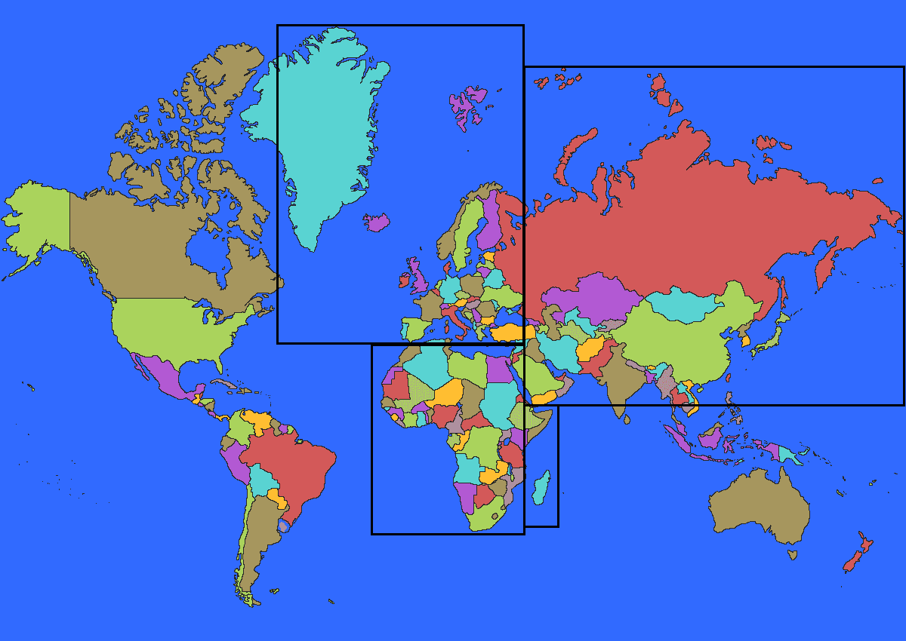
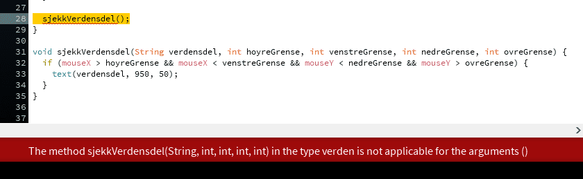
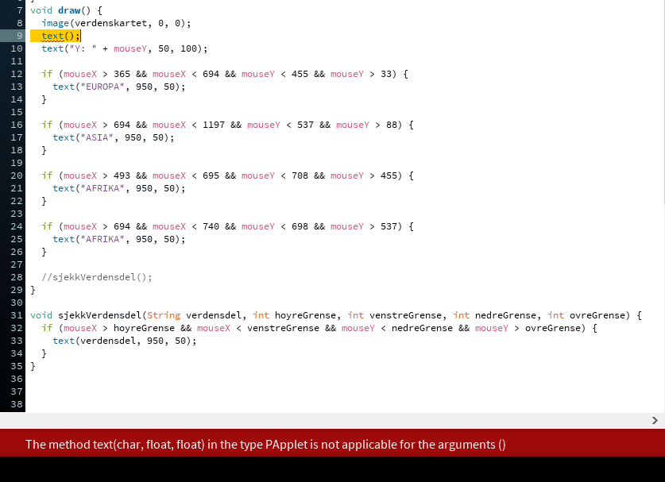
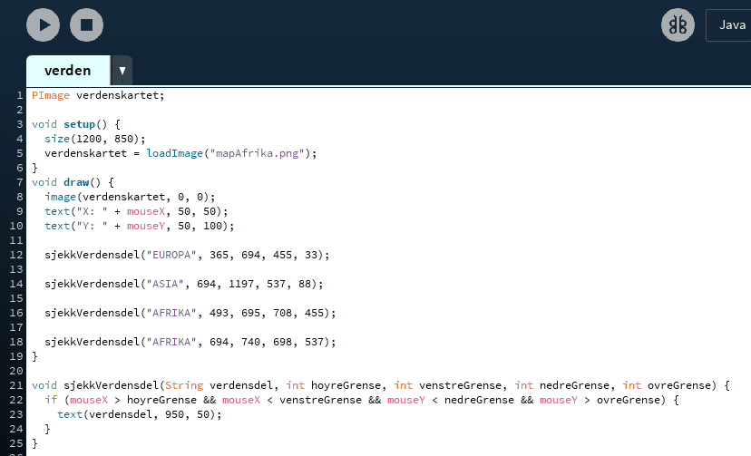

I denne oppgaven skal vi fortsette med verdenspillet! Nå skal vi komme så langt på spillet at det skal dukke opp navnet på en verdensdel i vinduet, og så er det om å gjøre å trykke på verdensdelen.
Slik skal oppgaven se ut når vi er ferdig å kode alt sammen:
Hittil har vi fått det til å dukke opp "EUROPA" på skjermen når musepekeren holdes over verdensdelen Europa på kartet.
Dette ble gjort ved å først si at Europa er firkanta. Deretter ble koordinatene til musepekeren vist som tekst i vinduet og så holdt vi musepekeren nøyaktig på grensene som var tegna opp, slik at vi kunne se hva koordinatene var og bruke disse for å lage if-setninger til å sjekke med.
Vi lagde en if-setning for hver side i firkanten som utgjorde grensa til Europa. Disse fant vi ut at måtte skrives inni hverandre slik at man sjekket om man var innenfor alle fire grensene samtidig.
Under har vi laga ei sjekkliste, dersom du får til alle punktene i lista, så er det ikke noe problem for deg å gjøre resten av denne oppgaven. Dersom du synes sjekklista er vanskelig, så anbefaler vi at du forsøker deg på introduksjonsdelen av oppgaven før du går videre.
Sjekkliste
Fikk du til alle punktene? Still tilbake alt sammen før du går videre.
Steg 1: Legg til Asia
Du lærte i introduksjonsdelen hvordan du la til Europa, så nå skal du få legge til Asia på samme måte. Vi har delt opp dette i mindre deler for deg. Under har vi laga ei sjekkliste som du må følge. Dersom noen av punktene er vanskelige, så husk at du kan sjekke med introduksjonsoppgaven.
Nå som du har vært gjennom hvordan du setter opp if-setninger inne hverandre, så er det på tide å vise hvordan du kan slå if-setninger sammen. Når du if-setninger settes inni hverandre så kan det leses som dette:
Dersom musepekeren er innenfor venstre grense
og dersom musepekeren er innenfor høyre grense
og dersom musepekeren er innenfor nedre grense
og dersom musepekeren er innenfor øvre grense,
så skal vi vise "EUROPA" på skjermen.
Gjør vi dette om til litt mer vanlig tale, så ville vi sagt:
Dersom musepekeren er innenfor venstre grense og musepekeren er innenfor høyre grense og musepekeren er innenfor nedre grense og musepekeren er innenfor øvre grense,
så skal vi vise "EUROPA" på skjermen.
Dette har vi lov å gjøre når vi koder også. La oss bytte ut det vi har så langt med kode i setningen over, da får vi dette:
if(mouseX > 365 og mouseX < 694 og mouseY < 455 og mouseY > 33)]{
text("EUROPA", 950, 50);
}
Så langt har vi ikke lagt til noe ny kode. Vi har bare satt alle testene på samme linje med "og" mellom. Vi har ikke lov å bruke "og", men vi har lov å bruke && som betyr akkurat det samme. La oss sette inn && der hvor vi har "og", da får vi:
Nå skal vi legge til Afrika, dette skal gjøres i en if-setning. Nå kan du velge om du vil følge sjekklista under bilde for å sette opp koden som trengs, eller om du vil forsøke å skrive den alene. Her er bilde av grensa til Afrika:
Sjekkliste:
if(er musepekeren innenfor den første grensa && er musepekeren innenfor den andre grensa){
vis teksten "AFRIKA" i vinduet.
}
Nå som Afrika også fungerer, så skal vi legge til en liten rute til, fordi som du ser på kartet, så er ikke Madagaskar, Somalia, halve Etiopia og Djibouti tatt med i firkanten, så når vi holder musepekeren over disse landene, så kommer ikke "AFRIKA" opp på skjermen. Det må vi fikse.
Vi har laga en ny firkant som bare inkluderer disse landene. Nå har du skrevet så mange if-setninger at denne tror vi du greier uten en sjekkliste. Dersom det er vanskelig, så er det bare å bruke sjekklista over, det er akkurat det samme som skal gjøres, bare med nye koordinater på grensene.
Gjør dette:

Her er koden vår så langt. Nå begynner det å bli en del if-setninger!
Steg 4: Lag en metode i steden for alle if-setningene
Nå skal vi gjøre koden vår enda mindre. Det er fordi vi skal legge til mange flere if-setninger og da vil vi skrive kode som er så enkel som mulig.
Når du ser etter på if-setningene, så er de nesten helt like. Det er bare grenseverdiene som er forskjellige. Når vi oppdager at vi kommer til å måtte skrive mye kode som ligner veldig, så kan man ofte putte det som er likt over i en metode og så foreta metodekall i stedet for å skrive samme kode på nytt og på nytt.
setup og draw er metoder vi har skrevet, mens text(); er en metode vi har kalt på. Når du trykker på play, så gjøres det automatisk et kall på setup, det skjer bare en gang. Deretter kalles draw på nytt og på nytt helt til programmet slås av.
La oss skrive en ny metode, den plasseres unden draw. Vi har valgt å gi metoden navnet sjekkVerdensdel. Da blir det slik:
void sjekkVerdensdel(){
}
Inni krøllparentesene skal vi skrive den koden vår som blir gjentatt, altså de lange if-setningene.
La oss starte med å putte inn en av if-setningene. Vi har valgt å kopiere inn if-setningen som sjekker om musepekeren er innenfor Europa sin grense, så nå ser metoden slik ut:
Vi har ikke lyst å skriv inn en if-setning for hver verdensdel i den nye metoden. For å bare ha en if-sentning, så bytter vi ut alle de tallene som er forskjellig fra verdensdel til verdensdel med variabler. Vi gir variabelnavn som er logiske, da er det lettere å lese koden senere. En variabel kan endres mens programmet kjører, men tall som er skrevet direkte inn kan ikke endres mens programmet kjører. I den første testen sjekker vi om musepekeren er innenfor den første grensa, altså den grensa som er til høyre. Vi har ikke lov å bruke æ, ø eller å, så da skriver vi høyre med o, altså hoyreGrense. Vi putter dette inn i stede for tallet 365 og får:
Programmet sier at hoyreGrense ikke kan bli en variabel. Det er fordi vi ikke har skrevet kode som forteller programmet at hoyreGrense er en variabel. Forløpig tror programmet at vi har gjort en skrivefeil. Programmet vet at vi skal sammenligne musepekeren sin koordinat med et eller annet tall, men akkurat nå er ikke hoyreGrense noe tall, det er bare noen bokstaver.
Vi må gjøre om hoyreGrense til en variabel av typen int, det betyr heltall. Det heter å deklarere variabelen. Vi kan deklarere variabelen flere steder, inni den nye metoden, utenfor alle metodene, eller inni parentesene til metoden. Hvor vi velger å deklarere variabelen avhenger av hvordan vi skal bruke metoden.
Ettersom vi ønsker å sjekke forskjellige grenser hver gang vi kaller metoden, så er det lurt å deklarere variabelen hoyreGrense inni parentesene til den nye metoden. Når deklarasjonen er plassert her, så må vi legge ved grenseverdien som parameter hver gang vi kaller på metoden.
Metoden ser slik ut:
void sjekkVerdensdel(int hoyreGrense, int ...., int ...., int .... ){
if(mouseX > hoyreGrense && mouseX < .... && mouseY < .... && mouseY > ....)]{
text("EUROPA", 950, 50);
}
}
I stede for punktum så skal det være de navna du har valgt for de forskjellige grensene.
Gjør dette:
Nå er det en ting som mangler. Det er navnet på verdensdelen. Alle verdensdelene skal ikke hete "EUROPA". Da må vi gjøre denne om til en String, det betyr en tekst.
Gjør dette:
Nå har vi laget en ny metode, men vi har ikke kalt på den nye metoden noe sted. Så forløpig så kjører programmet vårt en gang gjennom setup og deretter på nytt og på nytt gjennom draw uten å gå til den nye metoden.
Her er koden så langt, husk at vi sikkert har valgt litt forskjellige variabelnavn for de forskjellige grensene. Så lenge programmet kjører er ikke det noe problem. Det kan være greit om deklarasjonene på de forskjellige grensene, samt navnet på verdensdelen ligger i samme rekkefølge, men det er bare for å gjøre det lettere å feilsøke i koden seinere.
For å bruke den nye metoden må vi gjøre et metodekall på den. På samme måte som at vi har gjort et metodekall på text(); og size();, så skal vi nå gjøre et metodekall på sjekkVerdensdel();. Dette gjør vi inni draw-metoden.
Gjør dette:


Det mangler rett og slett parametre i metodekallene. For metodekallet på text(); trengs det først en char og deretter to float. Det betyr først den teksten som skal vises i vinduet, deretter to tall som bestemmer hvor teksten skal vises.
For metodekallet på sjekkVerdensdel(); så trengs det først en String, som sier hvilken verdensdel vi sjekker om musepekeren er i, deretter fire int, som forteller hvor de fire grensene til verdensdelen er.
Da må vi putte inn parametere i metodekallet.
Gjør dette:
Her er bilde av koden, vi har bare tatt med metodene draw og sjekkVerdensdel, ettersom det bare er der det er gjort endringer. Det er viktig at du har fjernet riktig if-setning og at du har brukt riktige parametre inni metodekallet på sjekkVerdensdel();.
Steg 6: Bruk sjekkVerdensdel-metoden til alle verdensdelene
Nå skal du få bruke metoden sjekkVerdensdel(); til å sjekke Asia og Afrika. Siden du allerede har funnet ut hva koordinatene er akkurat på grensa, så trenger du ikke å gjøre det på nytt.
Gjør dette:
Her er koden vår så langt.

Nå må vi legge til de siste verdensdelene. Her har vi et kart hvor vi har vist alle sammen. Nå skal vi gjøre metodekall på sjekkVerdensdel(); og legge til grenseverdiene til Nord-Amerika, Sør-Amerika og Oseania. Kartet vårt mangler verdensdelen Antarktis (Sydpolen), men det kan du ordne ved å velge et annet kart.
Nå har vi fått alle verdensdelene til å vises når vi holder musepekeren over dem, da er det på tide å få dette til å bli mer som et spill. Vi ønsker at det skal dukke opp navnet på en tilfeldig verdensdel på skjermen og så skal vi få poeng dersom vi greier å trykke på riktig verdensdel.
Det vi trenger for å få dette til å skje, er en liste med alle verdensdelene og deretter noe kode for å trekke tilfeldig fra lista.
Vi starter med lista. Denne skal inneholde ordene "AFRIKA", "ASIA", "EUROPA", "SØR-AMERIKA", "NORD-AMERIKA" og "OSEANIA". Dette er tekst, så da bruker vi en liste for å lage tekst. Da vi oppretta metoden sjekkVerdensdel, så brukte vi String inni parentesen for å ta i mot en tekst, men dette var bare ett ord, eller en tekst. Nå trenger vi noe som kan inneholde mange separate tekster. Det er ganske enkelt, alt vi trenger å gjøre er å sette [] bak String og så vet programmet at det er en liste med tekster vi skal ha. Vi vet nøyaktig hva lista skal inneholde, så vi fyller den opp samtidig som vi deklarerer den.
Vi deklarerer lista vår helt i toppen av programmet, utenfor alle metodene. Vi kan gi lista hvilket navn vi vil. Her har vi valgt alleVerdensdelene, så kodelinja ser slik ut:
Dette er alt vi trenger for å lage lista, denne typen liste heter String array.
Gjør dette:
random(); er en metode som vi kan kalle på for å få et tilfeldig tall. Til forskjell fra text(); og size();, så gjør ikke random(); noe med vinduet vårt, det som skjer når vi bruker random er at vi får tibake et tall og det tallet må vi putte i en variabel, slik at vi kan bruke det.
La oss derfor først deklarere en variabel. random(); gir oss et tall av typen float, derfor skulle egentlig variabelen vært av typen float, men når vi skal bruke tallet senere må det være av typen int. Derfor skal vi gjøre noe som heter å caste til int. Det betyr rett og slett bare at vi gjør verdien fra random(); om til en int. Navnet til variabelen kan vi bestemme selv, her har vi valgt at den skal hete tilfeldigTalll. Denne deklarasjonen skal skje øverst i koden, enten rett over eller rett under deklarasjonen av lista. Kodelinja blir slik:
int tilfeldigTalll;
Nå må vi få tilfeldigTalll til å inneholde et tilfeldig tall, det gjør vi inni setup-metoden. Vi starter med muntlig kode:
variabelen tilfeldigTalll skal være ett tilfeldig tall;
Nå bruker vi random(); med casting til int, da blir det:
tilfeldigTalll = (int)random(6);
Parameteret til random(); forteller hvor hvilke tall det skal velges tilfeldig mellom. Siden vi har 6 forskjellige verdensdeler med i lista, så vil vi at random(); skal gi oss ett tall mellom 0 og 6. Derfor skriver vi 6 som parameter.
Gjør dette:
Når vi skal velge noe fra et String array, så må vi skrive navnet på arrayet, så []. Alt som ligger i lista er nummerert i den rekkefølgen vi har skrevet lista. Inni [] skriver vi nummeret på den tingen i lista vi vil ha, dette nummeret må være av typen int. Dette er grunnen til at vi caster til int når vi gjør metodekall på random();. Sjekk at tallene stemmer ved å sammenligne tallet som tilfeldigTalll er med hvilken plass i lista verdensdelen som vises på skjermen er.
Før vi går videre er det på tide å fjerne litt unødvendig kode.
Nå skal vi sjekke om den som spiller trykker på riktig verdensdel. Da starter vi med å sjekke om spilleren trykker på knappen på musepekeren.
På samme måte som at vi kan bruke mouseX og mousY, så kan vi også bruke mousePressed. Forskjellen er at mens mouseX og mousY hele tiden oppdateres med tall som forteller oss hvor i vinduet musepekeren er, så er mousePressed en boolsk variabel, det betyr at den enten er true eller false, derfor kan vi bruke den direkte i en if-setning.
Muntlig skal vi gjøre dette:
Dersom musepekeren er klikka på,
så skal vi sjekke om musepekeren er over en og en verdensdel
Det å sjekke om musepekeren er over en og en av verdensdelene har vi allerede gjort inni draw-metoden ved å kalle på sjekkVerdensdel(); mange ganger. Da gjenstår bare å putte alle disse inni en if-setning.
Gjør dette:
Neste steg nå er å sjekke om spilleren har trykke på riktig verdensdel. Dette gjør vi inni if-setningen som er inni metoden sjekkVerdensdel. Nå skal vi sjekke om verdensdelen fra strengen som blir sendt inn til metoden er lik som den verdensdelen som er trekt tilfeldig. Muntlig blir dette:
Dersom verdensdelen som er trekt tilfeldig er lik verdelsdelen fra Stringen,
så viser vi teksten "RIKTIG" i vinduet.
Vi putter inn de tingene vi har, da blir if-setningen slik:
if(alleVerdensdelene[tilfeldigTalll] er lik verdensdel){
text("RIKTIG", 950, 50);
}
Nå skal vi sjekke om en tekst er lik en annen tekst. Da må vi bruke en metode som hører til klassen String, metoden heter equals(); og som parameter tar den det ordet vi skal sjekke. Når vi skal bruke en metode som hører til en klasse trenger vi bare sette punktum i mellom. Koden blir slik:
Det er kjipt å starte programmet på nytt hver gang spilleren har trykka på riktig verdensdel. Derfor må vi velge ett nytt tilfeldig tall inni if-setningen som sjekker om riktig verdensdel er trykka på.
Da gjør vi akkurat det samme som vi gjorde i setup-metoden da vi satt tilfeldigTalll til å være ett tilfeldig tall.
Gjør dette:
Her er koden så langt. Siden vi bare har lagt til en kodelinje inni metoden sjekkVerdensdel så viser vi bare den metoden:
void sjekkVerdensdel(String verdensdel, int hoyreGrense, int venstreGrense,
int nedreGrense, int ovreGrense){
if(mouseX > hoyreGrense && mouseX < venstreGrense &&
mouseY < nedreGrense && mouseY > ovreGrense)]{
if(alleVerdensdelene[tilfeldigTall].equals(verdensdel)){
text("RIKTIG", 950, 100);
tilfeldigTall = (int)random(6);
}
}
}
Steg 10: Få poeng
Til sist skal vi gi spilleren poeng hver gang riktig verdensdel blir trykka på. Siden vi hele tiden ønsker å få flere og flere poeng, så må vi lage en variabel som vi kan oppdatere når riktig verdensdel blir trykka på.
Variabelen skal være av typen int og kan for eksempel hete poeng.
Gjør dette:
poeng = 0;
poeng = poeng + 1;
Nå gjenstår bare å få minuspoeng når man trykker på feil verdensdel. Muntlig blir koden slik:
Dersom verdensdelen som er trekt tilfeldig er lik verdelsdelen fra stringen,
Så viser vi teksten "RIKTIG" i vinduet.
trekk et nytt tilfeldig tall
få et poeng
ellers
så skal vi få minus ett poeng
Vi har allerede de if-setningene som utfører sjekken, og vi har alt som skjer dersom vi trykker på riktig verdensdel. Det eneste som mangler er hva som skjer fra ellers og nedover.
Når vi skriver en if-setning, så kan vi alltid legge til en ellers, på engelsk else. Dersom vi legger til en else etter en if-setning, så vil koden inni else skje dersom testen i if-setningen er usann. Så dersom man trykker på riktig verdensdel, så får man poeng, ellers får man minuspoeng.
En else åpnes og stenges på samme måte som en if-setning, altså med krøllparenteser { og }.
Gjør dette:
Grunnen til at du får for mange minuspoeng er at du ikke rekker å slippe knappen på musepekeren før programmet har endre hvilken verdensdel du skal trykke på. Programmet kjører gjennom all koden din ca. 30 eller 60 ganger i sekundet. Det betyr at du må trykke veldig raskt for å ikke få minuspoeng for hver gang du trykker, selv om du trykker på riktig verdensdel. Du kan sjekke hvor raskt koden blir kjørt ved å gjøre et metodekall på text(); og så sette det første parameteret til å være frameRate. Tallet som vises på skjermen er antall ganger koden blir kjørt i sekundet.
Vi kan fikse alle minuspoengene ved å gjøre et metodekall på delay();, denne tar som parameter antall millisekunder koden skal ta pause. Et sekund er det samme som 1000 millisekunder. Du må være veldig forsiktig med å bruke delay(); i andre sammenhenger, fordi den pauser hele programmet, det betyr at absolutt ingenting blir sjekket så lenge programmet står og har pause.
Gjør dette:
Det var det! Nå har du et lite spill. Utvid spillet som du selv ønsker. Det er mange muligheter. Under finner du noen ekstraoppgaver som du kan gjøre dersom du har lyst.
Her er koden så langt. Husk at vår kode og din kode kan være forskjellig dersom du har valgt andre variabelnavn eller andre verdier enn det vi har. Det viktigste er at den fungerer!
Funnet en feil? Kunne noe vært bedre? Hvis ja, vennligst gi oss tilbakemelding ved å lage en sak på Github eller fiks feilen selv om du kan. Vi er takknemlige for enhver tilbakemelding!
 Verden - Del 2
Verden - Del 2 Sjekkliste
Sjekkliste